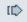
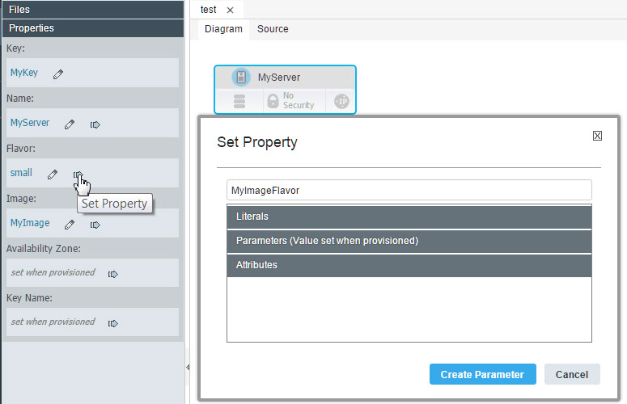
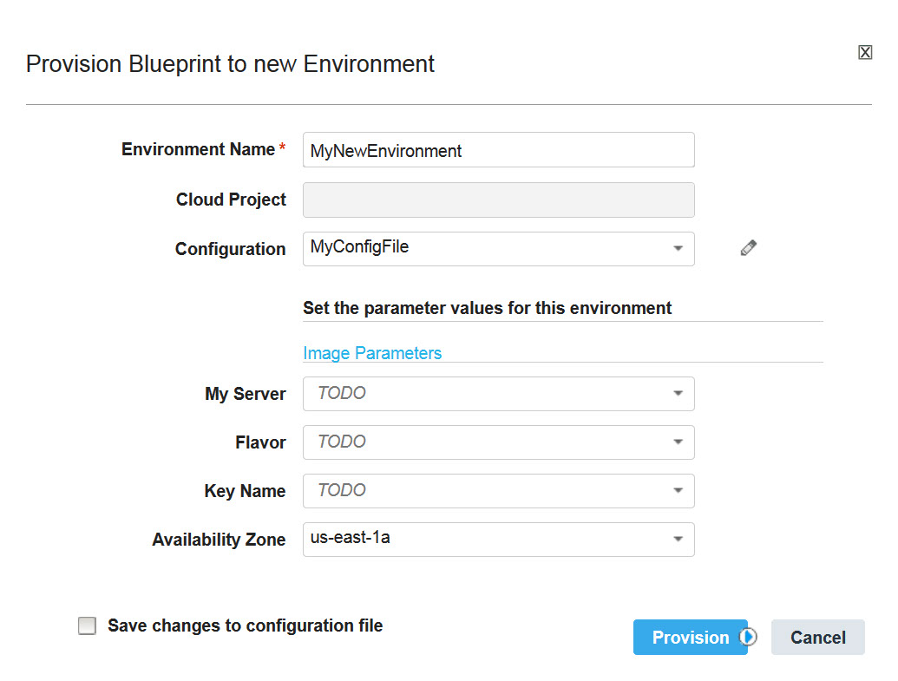

Rather than hardcoding values in a blueprint, you can externalize properties to
parameters. Then, you can specify values in a configuration file or specify values when you
provision an environment.
About this task
To provide property values in blueprints, you can put the values in parameters and then
externalize the parameters to a configuration file. Externalizing properties in this way is an
important part of creating blueprints that can be provisioned on different cloud systems. You can
keep the basic information in the blueprint and create configuration files for the specific details
for different clouds or different situations.
Procedure
To externalize a property:
-
In the blueprint designer, on the Diagram tab, click a resource to
select it.
-
At the left of the editor, in the Properties list, next to the property,
click Set Property

.
-
From the Set Property window, select an existing parameter or type the
name of a new parameter, as shown in the following figure.
In this example, the
flavor property is externalized to a new parameter
that is named
MyImageFlavor.

-
In the Set Property window, if you selected an existing parameter, click
Set. If you typed the name of a new parameter, click Create
Parameter.
The blueprint designer shows the parameter in place of the value. Similarly, the
resulting code for the property uses the
get_param function to retrieve the
parameter value, as in the following example
code:
MyServer:
type: OS::Nova::Server
properties:
name: MyServer
image: "MyImage"
flavor: { get_param: MyImageFlavor }
key_name: { get_param: key_name }
availability_zone: { get_param: availability_zone }
The
new parameter appears at the top of the blueprint, in the
parameters
section:
MyImageFlavor:
type: string
description: Generated
-
Create a configuration file or open an existing configuration file.
-
In the configuration file, click Add
 .
.
-
In the Choose Blueprint window, select the blueprint, and then click
OK.
Results
The configuration file contains externalized property and parameter values for the
blueprint.When you provision an environment from this blueprint, the blueprint designer prompts
you for a value for the parameters, as shown in the following figure. You can also specify a
configuration file to use the values that are in that file.
